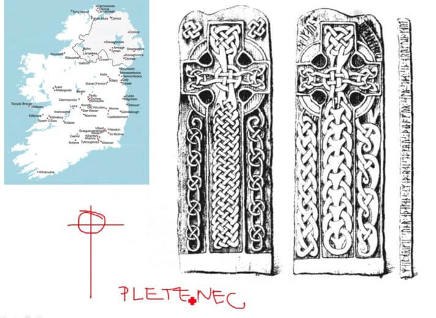

7. Předrománské umění v evropských a českých zemích (umění Velké
Moravy)
Chronologie
- roky cca 500 - 1000
- 529 - založení kláštera Monte Cassino
INSULÁRNÍ / IROSKOTSKÉ UMĚNÍ
(insura → řeck. ostrov)
-
V Evropě probíhá stěhování národů, byly zde různé kmeny,
jediný nepohybující lid je Irský
-
V 5. století se díky Sv. Patrikovi dostává do Irska
křesťanství
- Navazuje zde na původní keltské tradice
- Misionáři v Evropě → tzv. Iroskotské Misie
- Drobné kostelíky
- PLETENCE A SPIRÁLY
- Irský kříž → latinský s kruhem a uprostřed pletenec

- Book of Kells (kniha z keltu, evangelium)
-
lidské postavy nemají důraz na členění, je důraz na dekor
PŘEDROMÁNSKÉ UMĚNÍ FRANSKÉ ŘÍŠE
- území dnešní Francie, Německa, Beneluxu, kousek Itálie
-
Karel Veliký
- v roce 800 korunován císařem
-
FALCE = opevněné sídlo císaře
-
uvnitř:
- sakrální stavba
- soudní síň ve formě baziliky
- hospodářské zázemí
- celé dokola opevněno
- ve středověku se z nich vyvíjí hrady
-
antické sloupy, inspirace Ravennou, drahý dovoz
sloupů z apeninského poloostrova
-
KLÁŠTERY
-
bazilika
-
nově dvouvěžové průčelí → WESTWERK
- jižně rajský dvůr se zdrojem vody
- AMBIT → průchodná chodba kolem dvora
- REFEKTÁŘ → společná jídelna
- DORMITÁŘ → společná noclehárna
UMĚNÍ VELKÉ MORAVY
- 833 → vznik
-
863 → příchod Konstantina s Metodějem
- vytvoření staroslovanského písma (Hlaholici)
- snaha vytvořit církevní organizaci
- území dnešní Moravy a západu slovenska
- NÁKONČÍ = mužské opasky
-
pro ženy drobné doplňky → náhrdelníky, náušnice
-
DROBNÉ PRAVOÚHLÉ STAVBY
-
pravděpodobně souvislost s Iroskotskou misií
-
ROTUNDY
-
kruhová stavba s půlkruhovými přístavky tzv. APSIDA
-
přineseny k nám z dnešního území Chorvatska (Split,
Zadar)
- hlavní příklad → Mikulčice
-
uvnitř malované, ovšem dochovaly se jen fragmenty
-
Staré Město u Uherského Hradiště
- Kostely ze 3 celků → nejspíše významná stavba
- Dochované fragmenty
- dochovaný Stylus → nejspíše zde byla škola
- Kostel Sv. Markéty, Kopčany (SVK)
Obrázky
-
CHIRO??
- první estetizované písmo, Iroskotské umění
- Fí-ró = Kristus
-
Cáchy
- dovezené sloupy, oktogon s ochozem
-
Iluminované rukopisy
-
Replika Sv. Jana v Modré u Velehradu
-
Soubor gombíků
-
užité umění, gombíky byly kulaté kuličky se závěsem
použity pro ozdoby oblečení
- použito z kovaného plechu
Audio